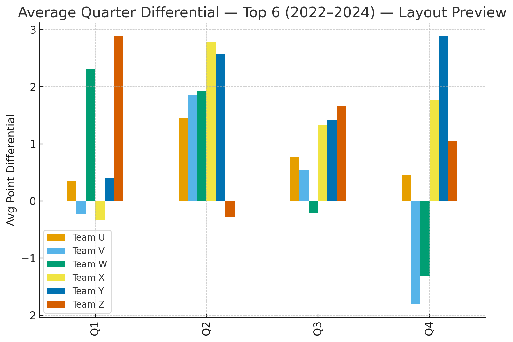
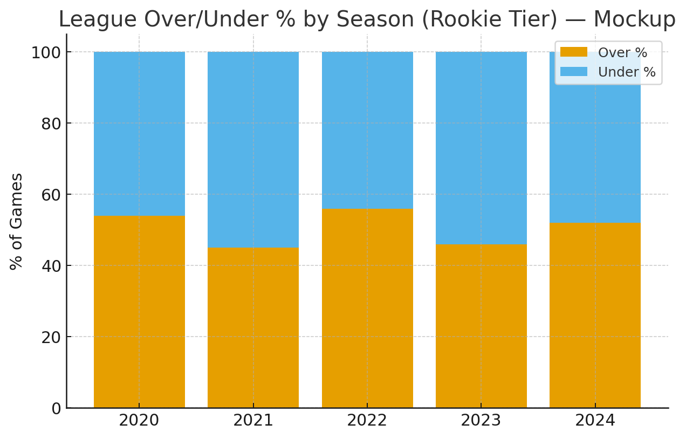
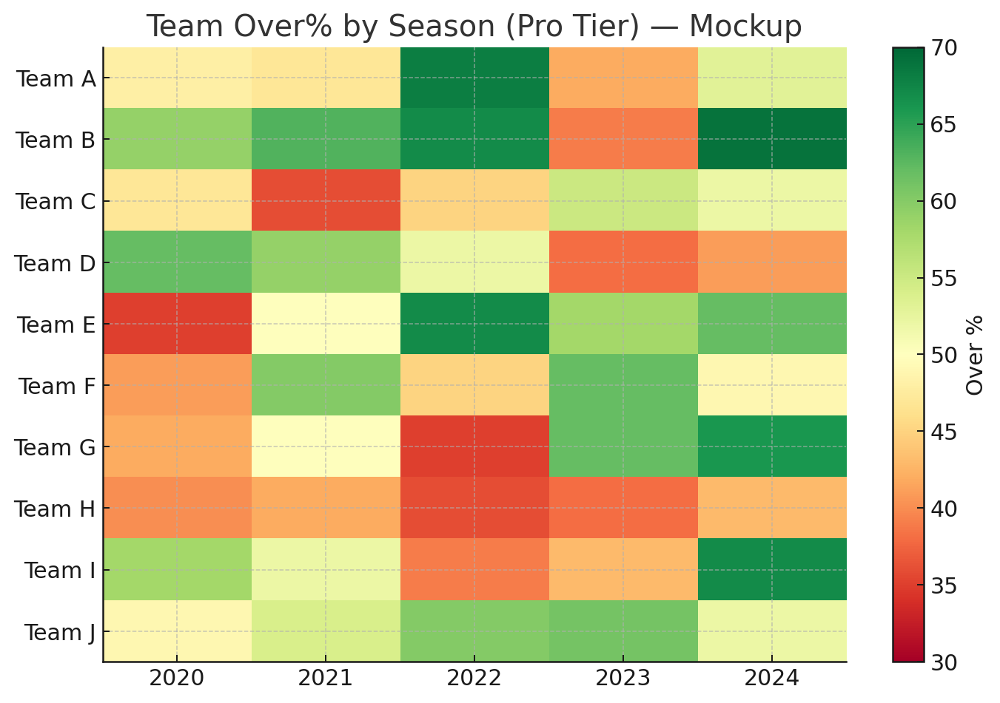
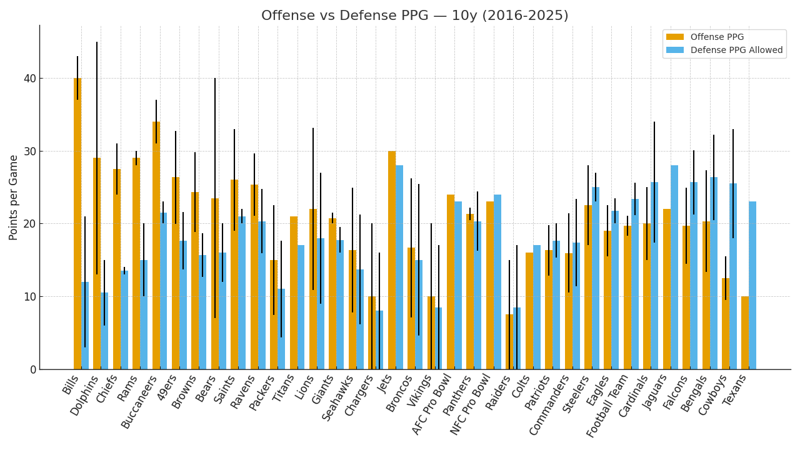

A sharper workflow for finding edges, managing risk, and making better betting decisions.
Calculated Risk combines live odds context, model outputs, bankroll-aware guidance, backtesting, prop tools, parlay workflow, and decision support into one operating system for sports analytics.
What the app does well
- • Surfaces top playable edges from the current board
- • Uses model probability + line context to rank conviction
- • Adds bankroll-aware slate posture and suggested sizing
- • Supports backtesting, tracking, props, and parlay workflow
- • Keeps features organized by tier instead of hiding core value
Built for more than picks
This is not just “top plays.” It is a workflow layer: edge discovery, context, tracking, historical review, power-user exports, and structured decision support.
Current app features
These are the capabilities the platform is designed to surface today across the app experience.
Live Daily Edge Board
Ranked daily plays using current lines, edge filtering, best-play deduping across books, and a cleaner slate view.
- • Top current plays
- • Best price / best edge logic
- • Market filtering
- • Daily slate download
Bankroll-Aware Guidance
The board is not treated as equal every day. Card posture, suggested range, and top-play sizing help control exposure.
- • Light / Normal / Aggressive slate posture
- • Suggested stake ranges
- • Edge-based sizing guidance
- • Bankroll snapshot support
Backtesting & Historical Review
Review how ideas would have performed across prior slates and compare decision quality against historical results.
- • Historical analysis
- • Simulation-aware workflow
- • Trend review
- • Performance discipline
Parlay & Scenario Tools
Build structured parlay workflows instead of guessing combinations blindly.
- • Parlay Builder
- • Ghost Parlay tools
- • Scenario organization
- • Better correlation thinking
Logs, Tracking & Workflow
Sharper users need audit trails. The app is built to support review, iteration, and cleaner learning loops.
- • Calculated Log / bet tracking
- • Daily notes and caution layers
- • Export-friendly structure
- • Better post-mortem review
Tiered Intelligence
Rookie keeps it simple. Pro adds more depth. HOF unlocks the heavier workflow and power-user layer.
- • Rookie = clean guidance
- • Pro = deeper tools and context
- • HOF = full-feature power workflow
- • Designed for growth without clutter
What users actually get
The point is not to overwhelm people with dashboards. The point is to give them a usable edge workflow.
For Rookie users
- • Core dashboards and edge views
- • Weekly simulations
- • Live board context
- • Community-facing insight layer
- • Beginner-friendly decision support
For Pro users
- • Everything in Rookie
- • Advanced trend and matchup layers
- • Backtesting access
- • Sharper filters and what-if workflow
- • Export-capable analysis
For HOF users
- • Everything in Pro
- • Full historical workflow
- • Power-user exports
- • Heavy research and scenario support
- • Maximum control over the stack
Use cases
- • Daily betting workflow
- • Prop research and comparison
- • Slate discipline and sizing
- • Post-slate review
- • Building repeatable process instead of vibes
Visual product snapshots
These screenshots and comparison visuals support the core product story.
1) Us vs Them

2) Expanded comparison view

3) Them at price points

4) Anonymous competitor tier coverage

Anonymous competitor ranges summarize public consumer tiers; scope varies by brand and product focus.
5) Named example tier coverage

Illustrative examples only, not exhaustive. Product bundles and exact entitlements vary by company.
Feature coverage by tier
Clear packaging matters. Here is how the stack is positioned across tiers.
| Feature |
Rookie
$20/mo • $200/yr
|
Pro
$30/mo • $300/yr
|
HOF
$40/mo • $400/yr
|
|---|---|---|---|
| Core insights & dashboards | ✅ | ✅ | ✅ |
| Live odds & line movement context | ✅ | ✅ | ✅ |
| Weekly simulations | ✅ | ✅ | ✅ |
| Player prop tools | ✅ | ✅ | ✅ |
| Matchup & trend deep-dive | ✅ | ✅ | ✅ |
| Bankroll-aware slate notes | ✅ | ✅ | ✅ |
| Historical backtesting | — | ✅ | ✅ |
| Model builder / what-if tools | — | ✅ | ✅ |
| Sharps / public signal layers | — | ✅ | ✅ |
| CSV / export workflow | — | ✅ | ✅ |
| Power-user research workflow | — | — | ✅ |
How we compare
The point is not that every competitor is weak. The point is that most products force tradeoffs. Calculated Risk is designed to reduce them.
Anonymous competitors vs us
| Features |
Them (Rookie)
$20–30/mo • $80–300/yr
|
Them (Pro)
$50–80/mo • $500–800/yr
|
Them (HOF)
$100–250+/mo • $1k–3k+/yr
|
Us (Rookie)
$20/mo • $200/yr
|
Us (Pro)
$30/mo • $300/yr
|
Us (HOF)
$40/mo • $400/yr
|
|---|---|---|---|---|---|---|
| Live Odds & Line Movement | ✅ | ✅ | ✅ | ✅ | ✅ | ✅ |
| Historical Backtesting | ☐ | ☐ | ✅ | ☐ | ✅ | ✅ |
| Player Prop Tools | ☐ | ✅ | ✅ | ✅ | ✅ | ✅ |
| Model Builder / What-If | ☐ | ✅ | ✅ | ☐ | ✅ | ✅ |
| Sharps / Public % Signals | ☐ | ✅ | ✅ | ☐ | ✅ | ✅ |
| Export (CSV/API) | ☐ | ☐ | ✅ | ☐ | ✅ | ✅ |
| Fantasy-Focused (DFS/Lineups/Rankings) | ☐ | ☐ | ☐ | ✅ | ✅ | ✅ |
| Weekly Simulations | ☐ | ✅ | ✅ | ✅ | ✅ | ✅ |
| Matchup/Trends Deep-Dive | ☐ | ✅ | ✅ | ✅ | ✅ | ✅ |
Named examples vs us
Illustrative, not exhaustive: Rookie — Action Network+, PFF+; Pro — BetQL Pro, FantasyLabs, Outlier Pro; HOF — Sports Insights Pro / enterprise bundles.
Ready to see the full workflow?
Launch the app, explore the feature stack, and choose the tier that matches how deep you want to go.